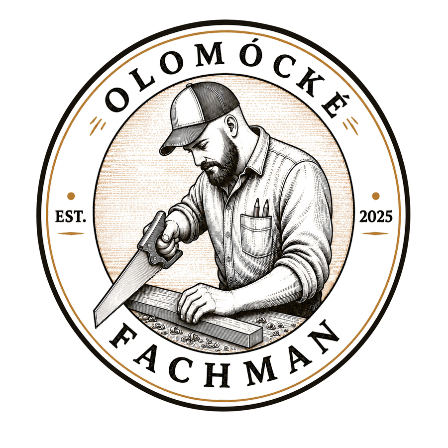
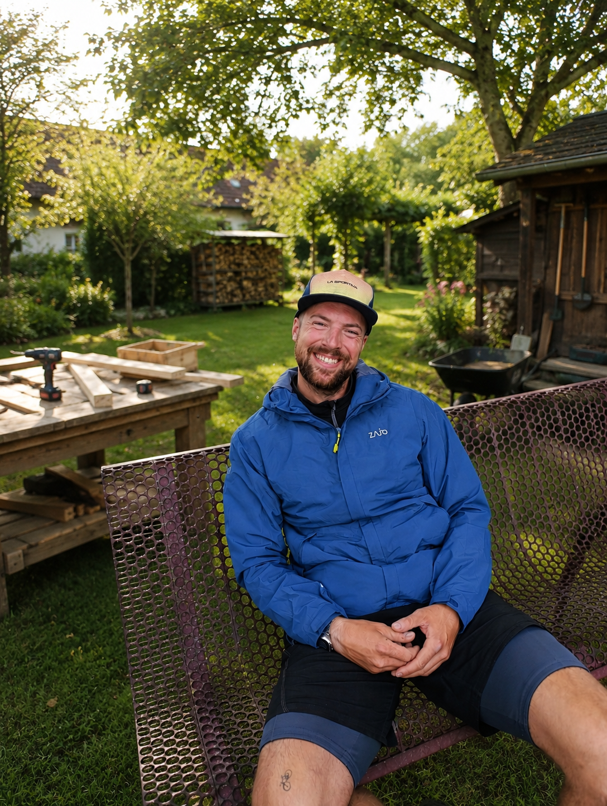

Montáže a instalace
Montáž nábytku, polic, garnýží, držáků a dalšího vybavení domácnosti.

Olomouc a okolí
Drobné opravy, montáže i větší práce v domácnosti a kolem domu.Poctivě, férově a s lidským přístupem.
A když je u toho dřevo, tím lépe.
S čím vám Fachman pomůže?
Montáž nábytku, polic, garnýží, držáků a dalšího vybavení domácnosti.
Pokládka podlah, montáž lišt a další dokončovací práce v interiéru.
Drobné opravy a práce, na které doma chybí čas, nářadí nebo zkušenosti.
Údržba, montáže a nejrůznější řemeslné práce kolem domu či zahrady.
Máte práci, která se těžko vejde do jedné kolonky? Ozvěte se. Podíváme se, jestli je to práce pro Fachmana.
Máte práci pro Fachmana?
Popište mi, s čím potřebujete pomoct. Ozvu se a domluvíme se na dalším postupu.

Kdo je vlastně Fachman?
Olomócké Fachman vznikl z jednoduché myšlenky – nabídnout lidem šikovné ruce tam, kde je zrovna potřebují.
Jmenuji se Petr a před lety jsem se narodil právě v Olomouci. Od malička mě řemeslo baví a naplňuje. Stejně tak mě baví setkávat se s lidmi, povídat si s nimi o jejich nápadech, plánech a vysněných projektech – ať už se jedná o byt, dům nebo zahradu.
Právě to jsou místa, která nám poskytují zázemí. Místa, kde bychom se měli cítit dobře, příjemně a především šťastně.
Po letech přemýšlení, jakým směrem se v životě profesně vydat, jsem se rozhodl spojit své zkušenosti z různých oblastí řemesla a nabídnout je těm, kteří je potřebují. Rád pomohu s opravou, úpravou nebo realizací Vašeho nápadu – a pokud ještě přesně nevíte, jak na něj, můžeme ho společně vymyslet a navrhnout.
A když se na konci práce objeví úsměv na Vaší tváři, je to pro mě stejně příjemné jako pocit z dobře odvedené práce.
Zakládám si na férovém jednání, dobré domluvě, pečlivě odvedené práci a především na spokojenosti na obou stranách.
Každý projekt je jedinečný. Proto práci na něm odvedu tak, jako bych ho dělal sám pro sebe.
„Kvalita znamená dělat věci dobře, i když se zrovna nikdo nedívá.“
Jak to probíhá?
Zavoláte, napíšete nebo odešlete nezávaznou poptávku.
Probereme společně, s čím potřebujete pomoci. Pokud bude třeba, přijdu se za Vámi podívat v rámci nezávazné konzultace.
Vytvořím pro Vás cenovou nabídku, domluvíme si podmínky realizace zakázky a termín, začneme.
Práci dokončím, uklidím po sobě a předám Vám hotové dílo. Třešničkou je spokojenost na obou stranách.
Férová domluva je pro mě stejně důležitá jako dobře odvedená práce.
Ceník
Vždy se nejdříve domluvíme, co je potřeba udělat a za jakých podmínek.
Konzultace možná osobně, případně i po telefonu, Whatsapp, nebo videohovor.
V rámci Olomouce a blízkého okolí zdarma.
Doprava do vzdálenějších míst účtována dle ceníku.
Sjednaná hodinová sazba záleží na druhu vykonávané činnosti a rozsahu realizace zakázky.
Účtuje se každá započatá hodina.
V rámci Olomouce 200 Kč + parkovné.
Každá další cesta (režie zakázky, obchod, půjčovna atd.) počítána dle skutečně ujetých km. Cesta mimo Olomouc – počítána dle skutečně ujetých km.
Počítá se cesta TAM + ZPĚT – 10 Kč/km.
Doprava většího množství materiálu na místo zakázky nebo odvoz odpadu apod. – 15 Kč/km.
Nutné režie spojené se zakázkou, čas strávený v obchodech, u dodavatelů a v půjčovnách.
Například nákresy, vizualizace, průzkum trhu nebo vyhledávání potřebných specifických materiálů k vykonání zakázky.
Účtuje se každá započatá hodina.
Případný úklid je zahrnut v rámci sjednané hodinové sazby.
Případné zapůjčení potřebných strojů, plošiny, nářadí apod. dle aktuálního ceníku půjčovny.
Materiál potřebný k realizaci projektu je účtován dle ceny u prodejce či dodavatele.
Každý úkon či změna v průběhu zakázky je vždy se zákazníkem předem konzultována.
Práce Fachmana
Kliknutím na fotografii ji zobrazíte ve větší velikosti.
Nezávazná poptávka
Popište mi ve formuláři, s čím Vám mohu pomoci. Co nejdříve se Vám ozvu a domluvíme se na dalším postupu.
Kontakt